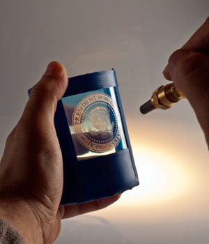

A photomask is applied to the surface that is being carved. Then using our sandcarver, a high pressure Aluminum Oxide is sprayed onto the
surface. The aluminum oxide removes the areas open to the mask.
Introduction To Sandcarving
Training Videos

Embroidery - Hat
Tajima Sai Set Up
Wilcom Embroidery Studio
Wilcom Training Videos
Wilcom Beginner Videos
Wilcom Puffy Hat Design
Assignment- Sandcarving and Hat Embroidery
1. Sandcarving
- Design a mask using CorelDraw. Make sure you invert the black and white on the file.
- Apply the mask and sandcarve the glass or crystal
2. Hat Embroidery
- Create a hat design using the Wilcom Embroidery Studio e4.
- Select a hat and hoop it up
- Embroider you hat
- Include the final file on your website and photos of the process.
ASSIGNMENTS TO DOCUMENT
- 1. Document all of the projects with pictures.
- 2. Include a discussion of each project of what you learned
- 3. Include all original files
- 4. Include a picture of the final project.
Back to index